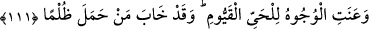

Allâh’ı ma‘rifette makamları farklı olur. Ma‘rifetteki farklılıkları miktarınca âhiretle
ilgili yüce derecelerde farklı olurlar.
111. Bütün yüzler (insanlar), diri ve her şeye hakim olan Allah için eğilip boyun
bükmüştür. Zulüm yüklenen ise, gerçekten perişan olmuştur.
“Bütün yüzler (insanlar), diri ve her şeye hakim olan Allah için eğilip boyun
bükmüştür.” “
” aslında “esir oldu” mânâsına gelir. Boyun eğmenin gerçekleştiğini
ve sübûtunu bildirmek üzere geniş zaman değil geçmiş zaman siygası ile “anet”
denilmiştir. Nitekim Bahru’l-ulûm’da böyle geçer. “Yüzler” kelimesi, ister sâlih olsun
ister isyânkar bütün yüzlere işârettir. Ya da bundan murad isyankârların yüzüdür.
Nitekim Allah Teâlâ “Onu yakın görünce inkâr edenlerin yüzleri kötüleşti.” (el-
Mülk, 67/27) buyurmuştur. Burada mükellefler, “yüzler” diye tabir olunmuştur. Çünkü
tevâzu, ancak yüz ifadesi ile belli olur. Nitekim Tefsir-i Kebîr’de böyle denilmiştir.
Âyette murâd edilen mânâ şudur: “Haşr gününde yüzler zelil oldu. O diri olan Allâh’a,
esirlerin güçlü krallara boyun eğdiği gibi tevazu ile boyun eğdiler.”
et-Te’vîlâtü’n-Necmiyye’de şöyle der: “Tevâzu ve zilletle bütün varlıkların yüzü,
onları yoktan var eden diri yaratıcıya boyun eğdi. Bütün varlıklar, hayat sahibi
olmalarını O’na borçludurlar. İhtiyaç, zorunluluk ve teslim olma bakımından her şeyin
kıyâmı ve devamı O’nunladır.”
el-Arâis’te der ki: “Ey ilim sahibi, Cenâb-ı Hak burada “vücûh/yüzler”i zikretmiştir.
Örfte “sâhibü’l-vech” ifadesi, şerefli/önemli kimseleri tavsif etmek üzere kullanılır.
Nebîler, rasûller, velîler ve mukarrebûn gerçek anlamda “ashâb-ı vücûh”turlar. Şu
halde kendi durumuna bir bak, iri gözlü hûrilerin yüzleri ve her güzel yüzlü yanında
senin durumun nedir? Cumhûrun yüzlerinde Allâh’ın güzelliğinden istifâde olunan
güzellik ve celâl olduğu için her ne kadar hepsi güzellikte Yûsuf gibi olsalar da, Allah
vech-i kerîminden nikabı açınca, O’nun kadîm olan cemal ve celâli zuhûr edince
hepsinin güzellikleri yok olur, secdeye kapanıp boyun eğerler.”
Molla Câmî der ki:
Ebedî olan cemâli kasdederim
Ebedî olmayan güzellikten bîzârım
Ebû Ümâme Bâhilî (r.a.)’dan Nebi (a.s.)’ın şöyle buyurduğu rivâyet edilmiştir:
“Allâh’ın ism-i a’zamını şu üç sûrede arayın: Bakara, Âl-i İmrân ve Tâhâ.”[103] Râvî
der ki: “Bu üç sûrede müşterek olan, “Allahu lâ ilâhe illâ hüve’l-hayyu’l kuyyûm”
ifâdesidir.